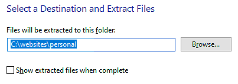
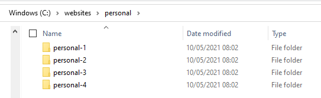
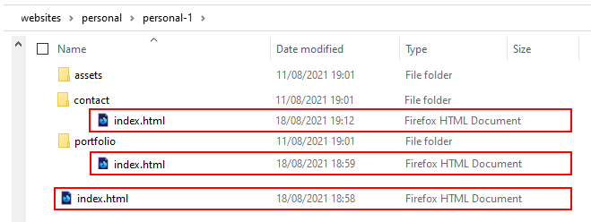
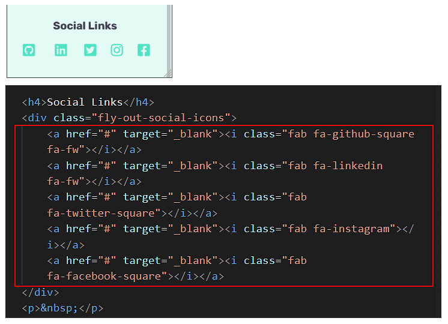
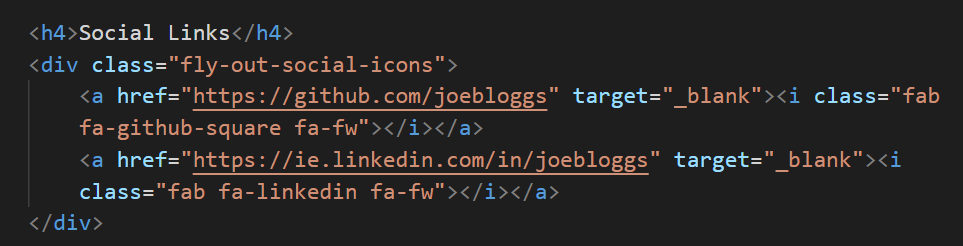
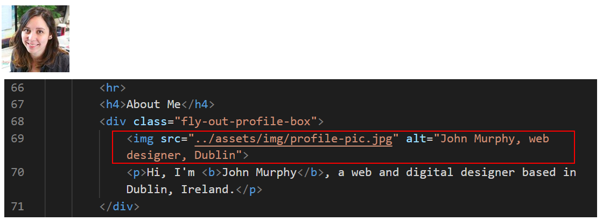
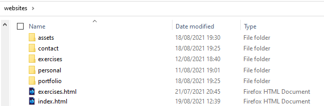
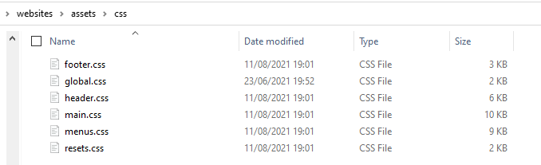

Introduction
In this project you will create your personal website, based on one of four sample website templates. Each of these website templates has three web pages:
- Home page (in main folder)
- Portfolio page (in /portfolio sub-folder)
- Contact page (in /contact sub-folder)
For each of the three websites, there are a number of stylesheet files located in the relevant assets/css sub-folder.
- resets.css
- menus.css
- header.css
- main.css
- footer.css
There are also a number of images, all located in the relevant assets/img sub-folder. And a JavaScript file, located in the assets/js sub-folder.
You can display finished versions of the four websites by clicking the links below.


Downloading your template files
Your first step is to download the files you need for this Lesson.
- Download the following compressed file to your computer: personal.zip
- Copy the ZIP file into your 'main' 📁 websites folder.
- Uncompress the ZIP file as shown below. 
- The files will unzip into a new sub-folder in your 📁 websites folder named 📁 /personal.
Inside this new folder you should see four new sub-folders:
websites/personal/personal-1
websites/personal/personal-2
websites/personal/personal-3
websites/personal/personal-4  - If you have not already done so, download the two images below to the 📁 assets/img subfolder of your 'main' 📁 websites folder.

 You should now see the two images in this sub-folder. See below.
You should now see the two images in this sub-folder. See below.

You are now ready to work with the sample files you have downloaded.
Choosing your preferred template
Review the four versions of the sample personal websites in your web browser. On a Windows PC, the 'Home' page files should be at the following locations:
file:///C:/websites/personal/personal-1/index.html
file:///C:/websites/personal/personal-2/index.html
file:///C:/websites/personal/personal-3/index.html
file:///C:/websites/personal/personal-4/index.html
From the sample Home pages, click on the menu options to view the related Portfolio and Contact web pages.
Which one of the four sample versions is closest to the one you would like for your own personal website?
Choose one.
You can change the text, fonts, colours and images of these web pages later, according to your requirements.
Personalising your meta tags
Each of your three sample web pages contains template text for the page's title and description tags. These two tags are examples of so-called meta-tags.
Your first task in personalising the sample web pages is to update the content of the meta tags with text of your own choice. Follow the steps below.
- In VS Code, open the three samples web pages from your chosen folder of template files – personal-1, personal-2, personal-3 or personal-4.
index.html
📁 /contact/index.html
📁 /portfolio/index.html For example, if you have chosen the 📁 /personal-1 sub-folder of template files, you would open the following web pages in VS Code.  - In the <head> of each web page, in the title and description tags, replace the sample text with your own details.
Here are a few examples.
- Home page:

- Portfolio page:

- Contact page:

- Home page:
See the helpful links below for guidance on using the title and description meta tags on your web pages.
Meta tags: Further resources
What is a title tag?. From moz.com.
What is a meta description? From moz.com
Meta Tags for SEO: Definition, Examples, & Best Practices. From Neil Patel
Content Optimization Strategies: Meta Descriptions. From Brian Dean

DO NOT use the same meta tags on different web pages of the same website.
This 'confuses' Google and other search engines.
"When two, or more, of your pages contain similar title tags, it falls upon the search engine to try to determine which page the user really wants to see in their results. What happens is that some of your pages will get preferred ranking status, while others get ignored completely. " Source.
Personalising your mobile 'fly-out' menu
The three sample web pages include a so-called fly-out or off-canvas menu that can be displayed only on mobile screens. You can show this menu by tapping/clicking the hamburger icon at the top-right of the screen.

Update the details on this fly-out menu as follows.
- Begin by updating the text and email address.
- Next, update the social media contact points or remove links you do not want to use.  Typically, you will want to include only links to your GitHub account and your Linkedin profile page. See the example below. 
Personalising your web page footers
Follow these steps to update the content of the footers on the three sample web pages.
- Scroll down to the <footer> block of each page.
- Edit the template text as required.

- Edit the social media contacts points and remove links you do not want to use.
 Typically, you will want to include only links to your GitHub account and your Linkedin profile page.
Typically, you will want to include only links to your GitHub account and your Linkedin profile page.
Replacing the two downloaded images
Your next step is to replace the two images you downloaded earlier to your assets/img sub-folder.
- website-logo.png: Your logo should be a png file that is exactly 200px wide and 40px tall.
Your logo image appears twice on each of the three sample web pages. Once in the desktop menu, and once in the mobile, fly-out menu.
 When designing your logo, note that you are not creating a roadside billboard, which typically measure 12 metres wide by 3 metres tall.
You are designing a logo that must display legibly a mobile phone screen. Below you can see some examples of leading brands that have simplified their logos for modern digital screens.
When designing your logo, note that you are not creating a roadside billboard, which typically measure 12 metres wide by 3 metres tall.
You are designing a logo that must display legibly a mobile phone screen. Below you can see some examples of leading brands that have simplified their logos for modern digital screens.

- profile-pic.jpg: Your personal image or avatar should be a jpg file at least 40px x 40px. It must be a square image.  This image appears on the 'flyout' menu on mobile phones.
Adding a favicon to your sample pages
A favicon is a small icon (really a set of icons for different screens) that is displayed within the browser tabs and bookmarks bar of a web browser.

If you have not already done so, create a favion. The instructions are here.
Place your favicon files in your websites/assets/img sub-folder.
When finished, add the favicon code to your three sample index.html web pages, to just below the description meta tag in the head. See the example below.
<link rel="apple-touch-icon" sizes="180x180" href="../../assets/img/apple-touch-icon.png"> <link rel="icon" type="image/png" sizes="32x32" href="../../assets/img/favicon-32x32.png"> <link rel="icon" type="image/png" sizes="16x16" href="../../assets/img/favicon-16x16.png"> <link rel="manifest" href="../../assets/img/site.webmanifest">
Updating the endpoint of your contact form
Your final step is to update your contact/index.html web page with the endpoint code you received from the Formspree website.
- In VS Code, display the contact/index.html web page.
- Update the form's action value by copying-and-pasting the endpoint value from Formspree. See the example shown below.

- Save your contact/index.html file.
You can check your sign up form is working by entering an email address and clicking the Send button.
You have now finished making the updates that apply to all three of the sample pages in your chosen website template.
Copying your updated template pages
After you have finished personalising your web pages, your next action is to copy your updated template files to the correct folders.
- In your 'main' websites folder is a web page named index.html.
 Before continuing, rename this file to exercises.html
Before continuing, rename this file to exercises.html

- From your chosen sub-folder of template files (personal-1, personal-2, personal-3 or personal-4), copy the home page index.html file to your 'main' websites folder. This replaces your list of exercises as your new 'home page'. 
- From your chosen sub-folder of template files (personal-1, personal-2, personal-3 or personal-4), copy the index.html file from the /portfolio sub-folder to the portfolio sub-folder of your 'main' websites folder.

- In your 'main' websites folder, create a new sub-folder named contact.
To this new folder, copy the index.html file from the contact sub-folder of your chosen sub-folder of template files (personal-1, personal-2, personal-3 or personal-4).

- From the personal/css sub-folder, copy all the files to your main assets/css sub-folder. 
- From the templates /img sub-folder, copy all the files to your main assets/img sub-folder.
- From the templates /js sub-folder, copy all the file to your main assets/js sub-folder.
That’s it. You have now successfully created your portfolio project.
Pre-upload checklist
Before uploading your files to GitHub, ensure you have performed all the updates in the following checklist.
- You have personalised the title and description meta tags in your three web pages. These two meta tags should be unique for each page.
- You have personalised the mobile 'fly-out' menu on each of your three web pages.
- You have personalised the footer on each of your three web pages.
- You have replaced the template logo image with your own logo image.
- You have replaced the profile picture with your own image or avatar.
- You have added a favicon to each of your three web pages.
- You have updated the endpoint of your contact form with your unique ID from Formspree.
After you have uploaded your web pages and asset files to GitHub, it is a good idea to check that the hyperlinks between your web pages all work correctly.
You can use the Dead Link Checker website for this purpose.

You can ignore the following two apparent errors. This is a fault with the online link checker.

After performing all these changes, you have two further updates you need to apply to your three web pages:
- Add a link to Google Analytics.
- Add a 'pop-up' cookie privacy message.
Uploading your files to GitHub
After finishing your updates, you are now ready to upload your files to your account on GitHub.
- Open a new tab in your web browser and go to GitHub.com. If you are not already signed in to your GitHub account, sign in now.

- On your GitHub home page, click the ‘repo’ that holds your web pages. Its name will look as follows, where username is your chosen username on GitHub.
username.github.io

- On the next GitHub screen displayed, near the right of the screen, you can see a button named Add file. Click on it.

- From the dropdown list displayed, choose the option Upload files.

- In File Explorer (Windows 10) or Finder (Apple Mac), drag-and-drop your 'main' index.html file, and your 📁 portfolio, 📁 assets and 📁 contact sub-folders, to upload them to your repository on GitHub.

- Scroll down to the bottom of the GitHub screen, and accept or edit the short message (Add files via upload) in the Commit changes box.
- Finally, click the green Commit changes button to upload your files.

Your portfolio web pages are now published on GitHub at web addresses similar to the following:
https://username.github.io/index.html
https://username.github.io/portfolio/index.html
https://username.github.io/contact/index.html
Or, simply:
https://username.github.io
https://username.github.io/portfolio
https://username.github.io/contact
It may take a few minutes for your uploaded files to appear on GitHub.